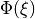
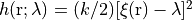
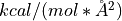

Free energy calculation from SMD¶
Aim¶
The purpose of this tutorial is to calculation of free energies from steered molecular dynamics simulations(SMD). The helix-coil transition of decaalanine, which is relevant to protein folding, is used as an exemplary system.
Introduction¶
In this section, we will simulate helix-coil transition of deca-alanine in implicit solvent with SMD and calculate its folding
free energy. Deca-alanine is an oligopeptide composed of ten alanine residues. In solvent at room temperature, the stable
configuration of deca-alanine is an α-helix. Stretching the molecule by an external force can induce its transition to an
extended form(coil). This helix-coil transition represents a simple but basic folding system, hence constituting an interesting
problem. We calculate the PMF  of the molecule with respect to the end-to-end distance  of the molecule.
of the molecule.
{kind=link}
In the simulation, we fix one end of the molecule (the N atom of the first residue) at the origin and constrain the other end (the capping N atom at the C-terminus) to stretch the molecule. A guiding potential .
Pre-prepared files¶
Prepare the input file¶
&task
ifsmd=.true.
/
This section means we will perform steered molecular dynamics simulations.
&smd
smdleadcv=1, smdrelaxstep=5000000, reversefrag=0, smdspeed=0.2,
smdinicv=13.1, smdendcv=35.1
smdk=50.0, smdpathfrag=100, smdnpath=100, smdweightfreq=1000
/
&fsacolvar
cv_type = 'COM_DIS', cv_i=7, 0, 107, cv_r=1.0, 1.0, 1.0
/
Namelist fsacolvar defined a collective variable which is the distance between the N atom of the first residue(atom index is 7) and the capping N atom at the C-terminus(atom index is 107).
Namelist smd includes the parameters for smd. smdleadcv=1 means there are only one collective variable(CV) is used to
pull the molecule. Before SMD
we will relax the initial structrue by performing 5000000 steps MD(smdrelaxstep=5000000. We will stretch the molecule only
from helix to extended form (reversefrag=0). A pulling speed of 0.2 Å/ns(smdspeed=0.2) and A force constant of k=50
 (smdk=50) is used. The end-to-end distance changed between 13.1(smdinicv=13.1) and
35.1 Å(smdendcv=35.1) with various constant velocities. There are 100 discrete states in the pulling process(smdpathfrag=100).
There are totle 100 trajectories are performed to calculate potential of mean force(smdnpath)
Output File Format¶
procinfo/procinfo_0.txt
The information file for smd trajectories
time |
process index |
pulling_force |
end-to-end distance |
|---|---|---|---|
0.010 |
0 |
100.304 |
13.101 |
0.020 |
0 |
101.590 |
13.097 |
0.030 |
0 |
108.026 |
13.010 |
0.040 |
0 |
109.363 |
12.931 |
0.050 |
0 |
106.283 |
13.098 |
… |
… |
… |
… |
Analyze the MD results¶
{kind=link}
{kind=link}
{kind=link}
SMD in AMBER¶
For comparison, we calculated PMF of the deca-alanine with respect to the end-to-end distance with SMD module in AMBER. We performed an equilibrium simulations for 5 ns and extract snapshots every 50ps for different starting coordinates. We used the same simulation conditions with the SMD module in FSATOOL and 100 trajectories are used to calculate the PMF.
Pre-prepared files¶
- ::
>./smd.sh >./groupfile.sh
This will generate 100 different “smd.in” files and a groupfile for multisander.
The input file of SMD in AMBER¶
smd_.in*
&cntrl
imin=0, ntb=0, igb=6,
ntpr=10000, ntwr=1000000, ntwx=2000000,
ntt=3, tempi = 300.0, temp0 = 300.0, ig=-1, gamma_ln=10,
ntf=1, ntc=1,
nstlim=110000000, dt=0.001,
cut=999.0,
jar=1,
/
&wt type='DUMPFREQ', istep1=10000, /
&wt type='END', /
DISANG=dist.RST
DUMPAVE=dist_vs_t_1
LISTIN=POUT_1
LISTOUT=POUT_1
Dist.RST
# Change distance between atoms 7 and 107 from 13.1 A to 35.1 A
&rst iat=7,107, r2=13.1, rk2 = 50., r2a=35.1, /
groupfile
-O -i smd_1.in -p pdb/ala.top -c pdb/ala_1.crd -r md_1.rst -x ala_1.traj
-O -i smd_2.in -p pdb/ala.top -c pdb/ala_2.crd -r md_2.rst -x ala_2.traj
-O -i smd_3.in -p pdb/ala.top -c pdb/ala_3.crd -r md_3.rst -x ala_3.traj
... ...
job.sh
#!/bin/bash
#SBATCH -J ala
#SBATCH --nodelist=node5,node6,node8
#SBATCH -n 50
#SBATCH -N 3
#SBATCH -p all
#SBATCH --output=log.txt
#SBATCH --error=err.txt
mpirun -np 50 /home/share/apps/amber18/bin/sander.MPI -ng 50 -groupfile groupfile
Running the simulation¶
> sbatch job.sh
Repeat twice and we will get 100 smd trajectories. There will 100 files named “dist_vs_t_*”.
Output File Format¶
dist_vs_t_1
The information file for smd trajectories
equilibrium distance |
end-to-end distance |
pulling_force |
work of pulling |
|---|---|---|---|
13.10000 |
16.82833 |
-372.83349 |
0.00000 |
13.10000 |
16.82833 |
-372.83349 |
-0.00007 |
13.10200 |
13.26706 |
-16.50639 |
-0.01080 |
13.10400 |
13.14276 |
-3.87602 |
-0.01647 |
… |
… |
… |
… |
Calculated the PMF¶
import numpy as np
import math
average=np.zeros((11001,2))
free_energy=np.zeros((11001,100))
average[:,0]= np.loadtxt("dist_vs_t_1", usecols=[0])
for i in range(1,101,1):
free_energy[:,i-1] = np.loadtxt("dist_vs_t_%d"%i, usecols=[3])
for j in range(11001):
free_energy[j,i-1]=np.exp(-free_energy[j,i-1]/(0.001986*300))
for k in range(11001):
average[k,1]=np.average(free_energy[k,:])
average[k,1]=-0.001986*300*math.log(average[k,1])
average[:,1]=average[:,1]-np.min(average[:,1])
np.savetxt("free_energy.txt",average)
{kind=link}
{kind=link}